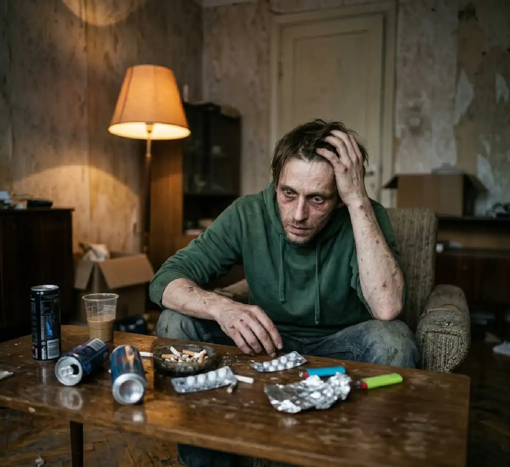

+38(068) 79 72 782
+38(068) 79 72 782Что такое солевая зависимость (наркотики)
Быстрый путь к разрушению, который можно остановить


Бесплатная консультация, работаем круглосуточно 24/7
Быстрый путь к разрушению, который можно остановить

Солевая зависимость — это тяжелая форма наркотической зависимости, связанная с употреблением синтетических психоактивных веществ, известных как «соли». Эти вещества воздействуют на центральную нервную систему, вызывая сильную стимуляцию, эйфорию и быстрое формирование патологической тяги. Особую опасность представляет их высокая токсичность и непредсказуемый состав.
Синтетические наркотики данного типа широко распространены из-за доступности и относительно низкой стоимости, однако последствия их употребления могут быть крайне тяжелыми — от психических расстройств до угрозы жизни. В отличие от многих других наркотических веществ, «соли» создаются искусственно и часто не имеют стабильной химической формулы. Производители регулярно меняют состав, обходя законодательные ограничения, из-за чего каждая новая партия может существенно отличаться по силе и токсичности. Это делает употребление особенно опасным: даже привычная доза может привести к передозировке, тяжелому отравлению или острому психотическому состоянию.
Основной механизм действия «солей» связан с резким увеличением уровня нейромедиаторов — в первую очередь дофамина и норадреналина. Именно это вызывает ощущение мощного прилива энергии, уверенности и эйфории. Однако за кратковременным «подъемом» следует выраженное истощение нервной системы, сопровождающееся тревогой, раздражительностью, депрессией и сильным желанием повторного употребления. Еще одна особенность солевой зависимости — стремительное развитие. В некоторых случаях достаточно нескольких эпизодов употребления, чтобы сформировалась устойчивая психическая тяга. Человек начинает искать новую дозу, теряет контроль над поведением и постепенно утрачивает интерес к обычной жизни, работе, семье и социальным обязанностям.
На фоне регулярного употребления происходят глубокие изменения в работе мозга. Нарушается сон, ухудшается память и концентрация внимания, снижается способность к критическому мышлению. Поведение становится импульсивным, возможны вспышки агрессии или, наоборот, выраженная апатия. Нередко возникают параноидальные идеи, чувство преследования и галлюцинации, что делает состояние человека опасным как для него самого, так и для окружающих. Физическое состояние также быстро ухудшается. «Соли» оказывают токсическое воздействие на сердечно-сосудистую систему, повышают артериальное давление, увеличивают риск аритмий и инсультов. Организм испытывает сильное обезвоживание, истощение, страдают печень и почки. При длительном употреблении возможны необратимые изменения внутренних органов.
Под названием «соли» скрывается группа синтетических катинонов — химических соединений, созданных в лабораторных условиях. Чаще всего это:
Эти вещества могут продаваться в виде кристаллов, порошка или таблеток. Их состав часто меняется, что делает употребление особенно опасным — человек никогда не знает точную дозировку и силу воздействия. Дополнительную угрозу представляет тот факт, что под одним и тем же названием могут распространяться совершенно разные по химической структуре соединения. Нередко в составе обнаруживаются примеси других психоактивных веществ, токсичных растворителей или даже тяжелых металлов. Это значительно увеличивает нагрузку на организм и повышает риск острых отравлений. Синтетические катиноны изначально разрабатывались как аналоги природных стимуляторов, однако их действие оказалось гораздо более агрессивным и непредсказуемым. Они быстро проникают в кровоток и воздействуют на мозг, вызывая выраженное психостимулирующее действие. При этом эффект может существенно отличаться даже у одного и того же человека в разные периоды употребления.
Способы употребления также варьируются: «соли» могут вдыхаться, куриться, приниматься внутрь или вводиться инъекционно. Каждый из этих способов усиливает риски, особенно при отсутствии контроля за чистотой вещества и дозировкой. Например, инъекционное введение повышает вероятность инфекций, а курение — токсического поражения легких. Из-за своей химической нестабильности и разнообразия форм «соли» представляют одну из самых опасных групп наркотических веществ. Их употребление часто приводит к тяжелым последствиям уже на ранних этапах, а прогноз при длительном приеме остается неблагоприятным без профессионального лечения.
Зависимость формируется очень быстро за счет мощного воздействия на дофаминовую систему мозга. Уже после нескольких эпизодов употребления человек начинает испытывать:
Со временем развивается как психическая, так и физическая зависимость, при которой отказ от вещества вызывает тяжелое состояние. Механизм формирования зависимости связан с резким и неестественным выбросом дофамина — нейромедиатора, отвечающего за чувство удовольствия и мотивацию. Мозг «запоминает» это состояние как крайне желаемое и начинает требовать его повторения. При этом естественные источники удовольствия (еда, общение, достижения) постепенно теряют свою значимость.
Уже на ранних этапах человек может сталкиваться с так называемыми «дофаминовыми провалами» — состояниями апатии, раздражительности и внутреннего напряжения в периоды без употребления. Это усиливает тягу к веществу и формирует замкнутый круг зависимости. С развитием заболевания толерантность к веществу возрастает — прежняя доза перестает давать ожидаемый эффект, и человек вынужден увеличивать количество или частоту приема. Это значительно повышает риск передозировки и тяжелых осложнений. Физическая зависимость проявляется через абстинентный синдром (синдром отмены), который может включать:
В таком состоянии человек часто не способен самостоятельно отказаться от употребления, так как дискомфорт становится крайне интенсивным. Именно поэтому при солевой зависимости особенно важно своевременное обращение за медицинской помощью и комплексное лечение под наблюдением специалистов.
Синтетические катиноны стимулируют выброс дофамина в разы сильнее, чем многие другие наркотики. Это приводит к:
Кроме того, короткое действие вещества заставляет употреблять его повторно в течение короткого времени, что ускоряет развитие зависимости.
Такой механизм формирует так называемый «замкнутый цикл употребления»: после кратковременной эйфории наступает выраженное ухудшение состояния — тревога, опустошенность, раздражительность. Чтобы избавиться от этих ощущений, человек снова принимает вещество, тем самым закрепляя зависимость на уровне поведения и нейрохимии. Особую роль играет быстрое истощение дофаминовых запасов. Мозг перестает вырабатывать достаточное количество нейромедиаторов самостоятельно, и без наркотика человек чувствует себя подавленным, лишенным энергии и мотивации. Это состояние может сопровождаться депрессивными мыслями и потерей интереса к жизни. Короткий, но интенсивный эффект «солей» часто приводит к так называемым «марафонам» — многократному употреблению в течение нескольких часов или суток. В таких состояниях человек практически не спит, не ест и находится в постоянном психофизиологическом напряжении. Это значительно увеличивает нагрузку на сердечно-сосудистую систему и мозг, повышая риск острых осложнений. Со временем даже кратковременное отсутствие вещества вызывает выраженный дискомфорт, а контроль над употреблением практически полностью утрачивается.
«Соли» оказывают разрушительное воздействие на центральную нервную систему:
При длительном употреблении возможно развитие:
В тяжелых случаях возникают необратимые изменения в мозге. Механизм повреждения связан с хронической перегрузкой нейронов. Под воздействием синтетических катинонов нервные клетки работают в режиме постоянного «перенапряжения», что со временем приводит к их истощению и гибели. Нарушаются связи между нейронами, ухудшается передача сигналов, страдают высшие функции мозга — мышление, память, внимание и способность к принятию решений. Одним из наиболее опасных последствий является развитие острых психотических состояний. Человек может терять связь с реальностью, испытывать зрительные и слуховые галлюцинации, ощущать преследование или угрозу. Такие состояния нередко сопровождаются выраженной тревогой, паникой и неконтролируемыми действиями.
Параноидные расстройства и агрессивное поведение делают зависимого потенциально опасным как для себя, так и для окружающих. В некоторых случаях наблюдаются вспышки немотивированной агрессии, дезориентация, неадекватные реакции на обычные ситуации. Со временем формируются стойкие когнитивные нарушения: ухудшается память, снижается интеллект, теряется способность к обучению и социальной адаптации. Даже после прекращения употребления восстановление может быть длительным и неполным.
Раннее выявление зависимости значительно повышает шансы на успешное лечение. Обратить внимание стоит на следующие признаки:
Также человек может становиться замкнутым, скрытным и менять круг общения. На начальных этапах эти симптомы могут казаться временными или списываться на стресс, усталость или проблемы в личной жизни. Однако при солевой зависимости такие изменения, как правило, быстро нарастают и становятся более выраженными. Поведение человека может становиться непредсказуемым: периоды чрезмерной активности сменяются резкой апатией и эмоциональным «провалом». Нередко появляются нарушения режима дня — человек может не спать по несколько суток подряд, а затем испытывать сильное истощение. При этом наблюдается снижение концентрации внимания, ухудшение памяти, неспособность выполнять привычные задачи.
Социальные изменения также являются важным сигналом. Человек может избегать общения с близкими, скрывать свои действия, резко менять интересы и окружение. Часто появляются финансовые трудности, необъяснимые траты, попытки занять деньги или продать личные вещи. Физические признаки могут включать ухудшение внешнего вида: бледность кожи, похудение, следы усталости, тремор рук. В некоторых случаях отмечается повышенная потливость, учащенное сердцебиение и общее истощение организма.
Солевая зависимость приводит к серьезным нарушениям здоровья. Психические последствия:
Физические последствия:
Без лечения состояние быстро ухудшается. Психические нарушения при употреблении «солей» часто носят прогрессирующий характер. Тревожность и внутреннее напряжение со временем усиливаются, появляются панические состояния, навязчивые мысли, ощущение угрозы. Депрессивные эпизоды становятся более глубокими и продолжительными, человек теряет интерес к жизни, может испытывать чувство безысходности. В тяжелых случаях развиваются стойкие психозы, при которых нарушается восприятие реальности и поведение становится неадекватным. Физическое состояние также стремительно ухудшается. Из-за постоянной стимуляции организм работает на пределе своих возможностей, что приводит к быстрому истощению ресурсов. Нарушается работа сердечно-сосудистой системы — повышается давление, учащается пульс, увеличивается риск аритмий, инфаркта и инсульта.
Судорожные состояния могут возникать как на фоне интоксикации, так и при отмене вещества. Они представляют прямую угрозу жизни и требуют неотложной медицинской помощи. Печень и почки, отвечающие за выведение токсинов, испытывают колоссальную нагрузку, что может приводить к их повреждению и развитию хронической недостаточности. Дополнительно страдает иммунная система: организм становится более уязвимым к инфекциям, замедляется восстановление тканей, ухудшается общее самочувствие. Нередко наблюдаются выраженное обезвоживание, дефицит витаминов и микроэлементов, что еще больше усугубляет состояние пациента.
Лечение должно быть комплексным и включать:
Важно понимать, что самостоятельные попытки справиться с зависимостью редко бывают эффективными. Необходима помощь специалистов. Комплексный подход позволяет воздействовать не только на физическую, но и на психологическую составляющую зависимости. На первом этапе проводится медикаментозная стабилизация состояния пациента: снимается интоксикация, нормализуется сон, уменьшается тревожность и восстанавливается работа внутренних органов. Врач подбирает препараты индивидуально, с учетом состояния здоровья и длительности употребления. Детоксикация является важным шагом, так как помогает вывести токсические вещества и облегчить абстинентный синдром. Однако одного этого этапа недостаточно — без дальнейшего лечения риск рецидива остается крайне высоким.
Психотерапия играет ключевую роль в формировании устойчивой ремиссии. Она помогает пациенту осознать причины зависимости, научиться справляться со стрессом без употребления веществ, изменить поведенческие модели и восстановить контроль над своей жизнью. Часто используются индивидуальные и групповые формы работы, а также поддержка со стороны семьи. Реабилитация направлена на закрепление результата лечения. В этот период человек учится возвращаться к социальной жизни, восстанавливает отношения с близкими, формирует новые привычки и цели. Этот этап особенно важен, так как именно он снижает вероятность срывов в будущем.
Детоксикация — это первый этап лечения, направленный на выведение токсинов из организма и стабилизацию состояния пациента. Она помогает:
Процедура проводится под контролем врача и может включать инфузионную терапию (капельницы), витамины и симптоматическое лечение. На этом этапе основная задача — максимально безопасно очистить организм от продуктов распада наркотических веществ и восстановить жизненно важные функции. Синтетические катиноны оказывают выраженное токсическое воздействие на сердце, печень, почки и нервную систему, поэтому детоксикация направлена не только на выведение токсинов, но и на поддержку работы этих органов.
Инфузионная терапия позволяет восполнить дефицит жидкости, нормализовать электролитный баланс и ускорить выведение вредных веществ. Дополнительно могут применяться препараты для стабилизации артериального давления, улучшения работы сердца, снижения тревожности и нормализации сна. Особое внимание уделяется состоянию нервной системы. В период отказа от вещества у пациента могут наблюдаться выраженная тревога, раздражительность, бессонница и депрессивные состояния. Медицинская поддержка помогает смягчить эти проявления и сделать процесс более контролируемым.
Детоксикация — это только начальный этап лечения. Она снимает острые проявления интоксикации, но не устраняет саму зависимость. Без последующей психотерапии и реабилитации сохраняется высокий риск возврата к употреблению. Именно поэтому детоксикация должна рассматриваться как часть комплексного лечения, проводимого под наблюдением специалистов, с последующим переходом к полноценной программе восстановления.
Вызов нарколога на дом — это медицинская услуга, которая позволяет получить квалифицированную помощь при алкогольной или наркотической зависимости без посещения клиники. Специалист приезжает к пациенту в кратчайшие сроки, проводит осмотр, оценивает состояние организма и сразу начинает необходимое лечение. Такая форма помощи особенно актуальна в ситуациях, когда человек находится в тяжелом состоянии, испытывает выраженную интоксикацию или не может самостоятельно обратиться за медицинской помощью. Также это удобный вариант для пациентов, которые хотят сохранить конфиденциальность и пройти лечение в привычной обстановке. Нарколог на дому занимается:
Врач использует современные и безопасные методы терапии, индивидуально подбирая препараты с учетом состояния пациента, возраста и сопутствующих заболеваний. Уже в первые часы после начала лечения наблюдается улучшение самочувствия: снижается интоксикация, стабилизируется давление, нормализуется сон и общее состояние.
Вызов нарколога на дом доступен в таких городах как : (Киев | Харьков | Одесса | Днепр | Львов | Запорожье | Черкассы). Главное преимущество услуги — это быстрое реагирование и возможность начать лечение без промедления. В ряде случаев именно своевременный выезд врача помогает предотвратить развитие осложнений и сохранить здоровье пациента.
Поддержка семьи играет важную роль в лечении зависимости. Важно:
обратиться за профессиональной помощью
Не стоит пытаться лечить человека самостоятельно — это может усугубить ситуацию. Родные и близкие часто становятся первым звеном, которое может заметить проблему и повлиять на решение человека обратиться за помощью. При этом важно понимать, что зависимость — это заболевание, а не «слабость характера», поэтому подход должен быть максимально взвешенным и поддерживающим. Игнорирование проблемы или надежда на то, что «само пройдет», как правило, приводит к ее прогрессированию. В то же время излишнее давление, угрозы и конфликты могут вызвать обратную реакцию — отрицание и уход в еще более глубокую зависимость.
Наиболее эффективной стратегией является спокойный и открытый диалог. Важно говорить с человеком без обвинений, объяснять свою обеспокоенность его состоянием и мягко направлять к мысли о необходимости лечения. Поддержка должна выражаться не в контроле, а в готовности помочь пройти путь восстановления вместе. Также стоит избегать так называемого «созависимого поведения» — когда близкие начинают покрывать последствия употребления, решать проблемы зависимого и тем самым невольно поддерживают болезнь. Гораздо правильнее обозначить границы и направить человека к специалистам. Обращение за профессиональной помощью — ключевой шаг. Врачи-наркологи и психологи могут не только помочь пациенту, но и дать рекомендации семье, как правильно выстроить поведение и поддержать близкого в процессе лечения.
Наркологическая служба UmbrellaPlus предлагает комплексное лечение солевой зависимости с учетом индивидуальных особенностей пациента. Мы используем современный комплексный подход, который направлен не только на устранение последствий употребления, но и на работу с причинами зависимости. Это позволяет добиться более устойчивого результата и снизить риск рецидива. Особое внимание уделяется конфиденциальности — лечение проходит анонимно, без передачи информации третьим лицам. Каждый пациент получает индивидуальную программу терапии, разработанную с учетом его состояния, стажа употребления и сопутствующих заболеваний.
Телефон для консультации и вызова нарколога: +38(050-021-69-57)

Да, мы строго соблюдаем полную конфиденциальность на всех этапах лечения. Информация о пациенте, диагнозе и прохождении терапии не передаётся третьим лицам. Обращение к нам не влечёт постановку на учёт. Вы можете быть уверены в безопасности и анонимности.
Программа лечения разрабатывается индивидуально после консультации со специалистом. Учитываются вид зависимости, её длительность, физическое и психологическое состояние пациента. Такой подход позволяет повысить эффективность терапии и снизить риск срыва. Мы не используем шаблонные решения.
Да, мы сопровождаем пациентов и после основного курса лечения. Проводятся консультации, рекомендации по адаптации и профилактике рецидивов. При необходимости возможна дальнейшая психологическая поддержка. Это помогает сохранить результат и вернуться к полноценной жизни.
Номер телефона:
+380 (68) 797 27 82
+380 (50) 021 69 57
Адрес наркологического центра вашего города уточняйте по
телефону
Работаем в: Киеве, Одессе, Львове, Харькове, Днепре,
Запорожье, Черкассах, Чугуеве, Черноморске, Каменском
Telegram: t.me/umbrellaplus
График работы: Круглосуточно